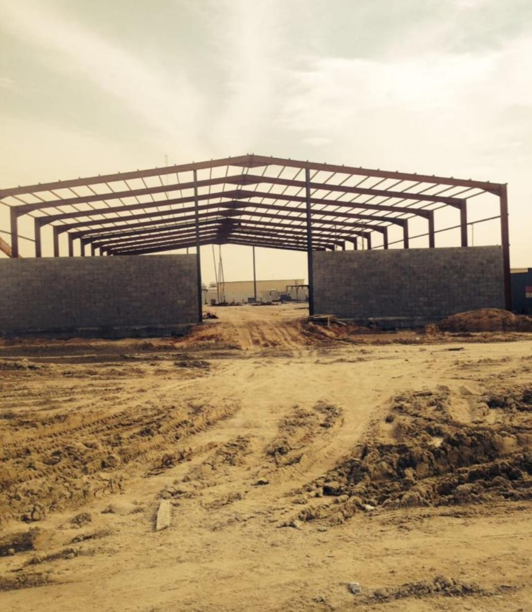
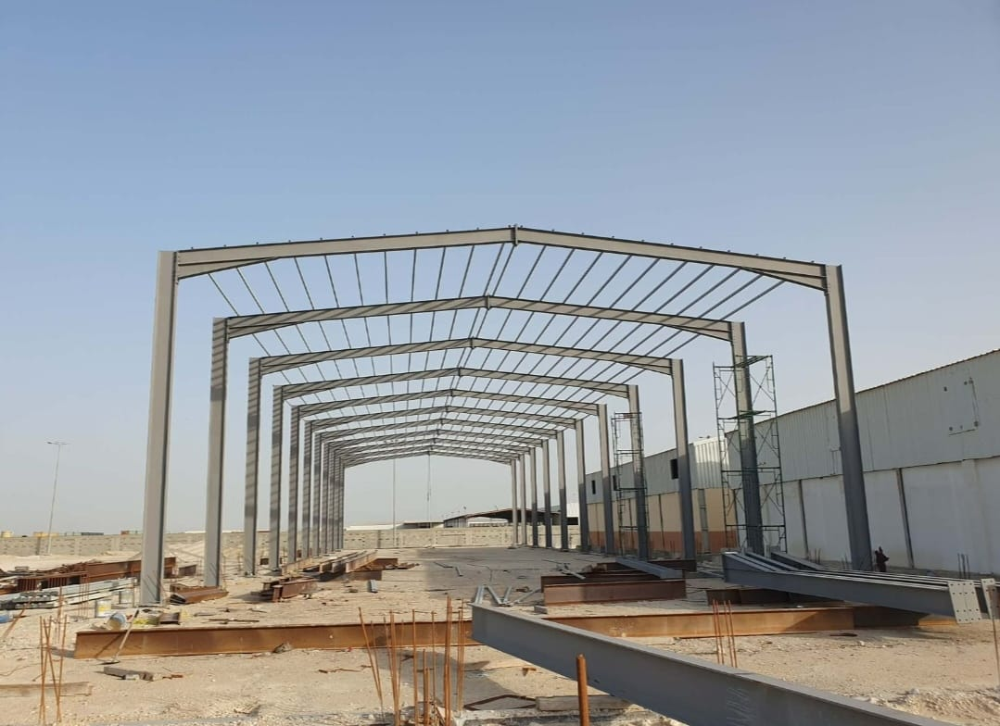
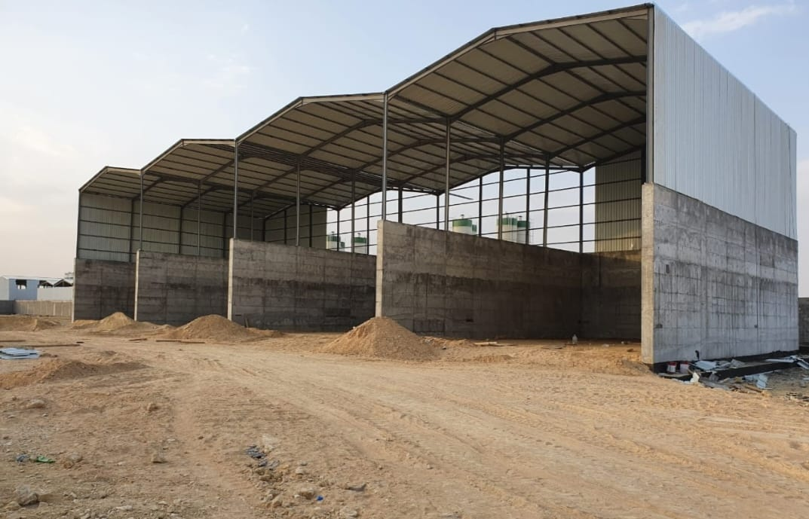

نماذج من أعمالنا في مجال الهياكل المعدنية — الصور توضيحية، استبدلها بصور مشاريعكم الحقيقية.
هنغار
تنفيذ هنغار صناعي واسع بتصميم متين يجمع بين جدار سفلي من البلوك الإسمنتي وجزء علوي بألواح معدنية وسقف مائل، مع مدخل رئيسي كبير يسهل دخول الشاحنات، ليكون الخيار الأمثل للمستودعات والورش
هياكل معدنية
هياكل معدنية
تركيب الهيكل الإنشائي والمعدني المتين لهنغار أو مستودع قيد الإنشاء، مع إبراز شبكة الأعمدة والدعامات الفولاذية المصممة بأعلى معايير الجودة والهندسة لضمان أقصى قوة تحمل وثبات.
مستودعات
مستودعات بمساحات واسعة
مبنى هنغار صناعي أو مستودع قيد الإنشاء بمساحة واسعة، يظهر بهيكله الحديدي المقاوم وجدرانه السفلية المبنية من البلوك الإسمنتي مع سقف مائل متين، مصمم ليوفر حماية وثباتاً للمشاريع التجارية واللوجستية.

هياكل فولاذية
هياكل فولاذية
نفيذ وتشييد الهيكل الحديدي لهنغار صناعي واسع قيد الإنشاء، مع بناء الجدران السفلية من البلوك الإسمنتي وتحديد مدخل رئيسي عريض يسهل حركة المعدات والشاحنات للمستودعات والورش

هياكل فولاذية وجسور
مراحل تركيب وتشييد الهيكل الحديدي والجسور الفولاذية لـ هنغار صناعي واسع، مصمم بهندسة دقيقة توفر أقصى درجات الثبات والاتساع للمستودعات والمصانع

مجموعة هناغر مطورة
تصميم متطور لهنغار صناعي واسع مفتوح
تصميم متطور لهنغار صناعي واسع مفتوح الجوانب ومقسّم إلى عدة أقسام متجاورة بسقف معدني مائل وجدران خرسانية سفلية قوية، مما يجعله مثالياً لمشاريع التخزين، الورش الكبرى، أو مواقف المعدات والآليات
ملاحظة: الصور والمشاريع المعروضة هنا أمثلة توضيحية فقط، ولا تمثل أعمالاً منفذة فعلياً.